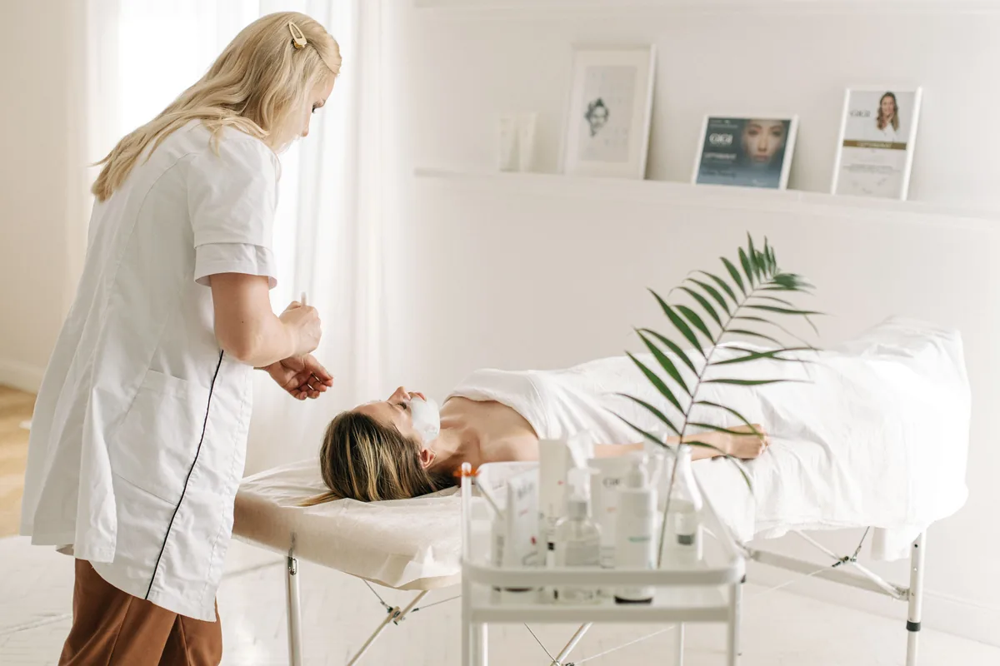
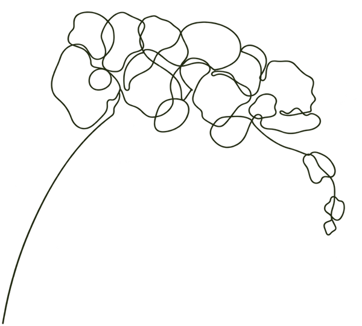
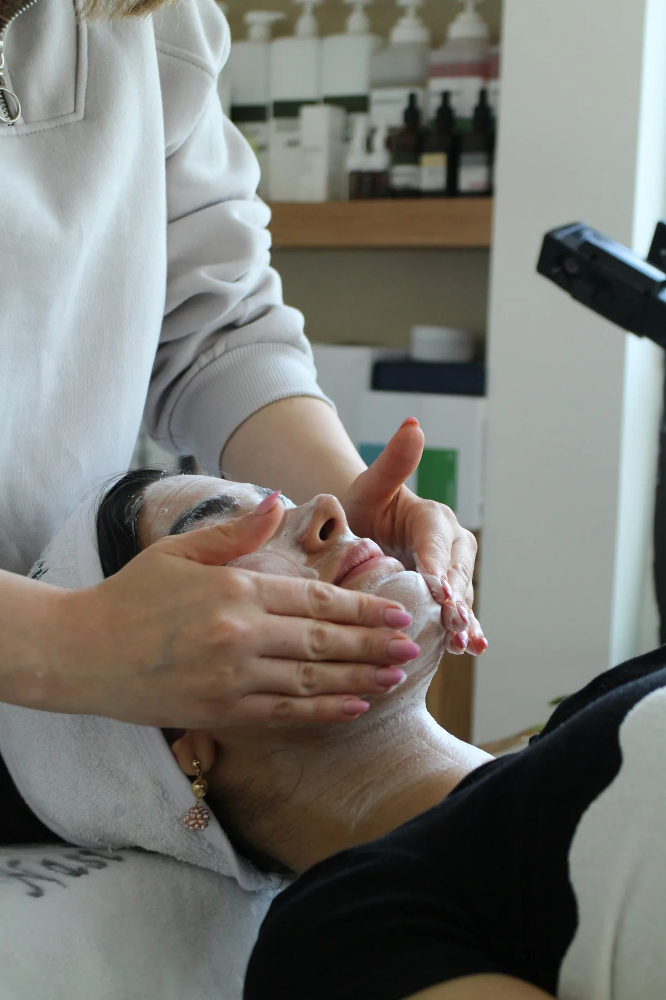
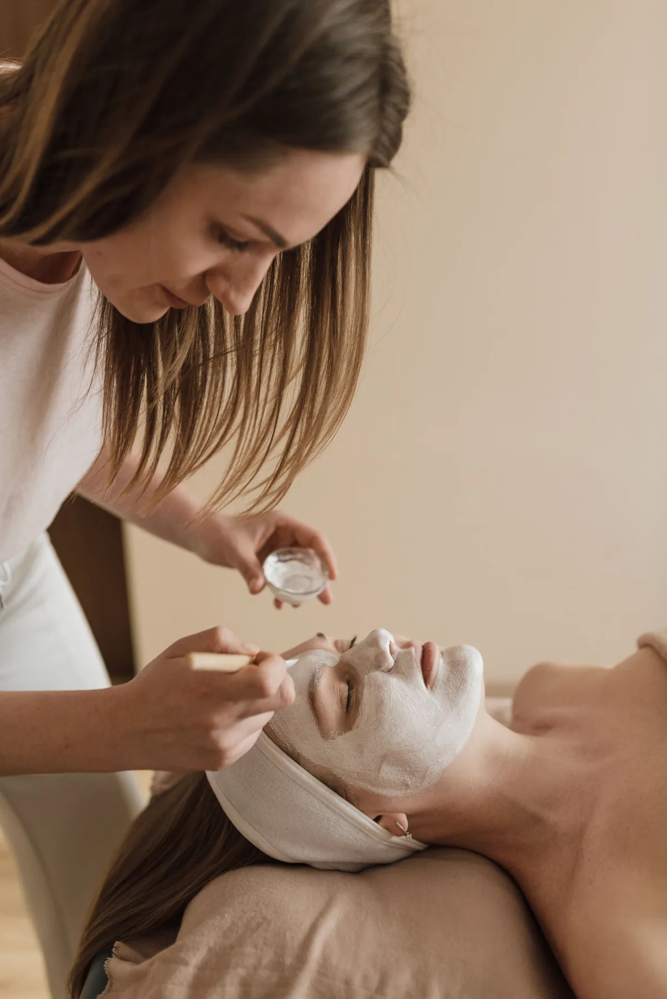
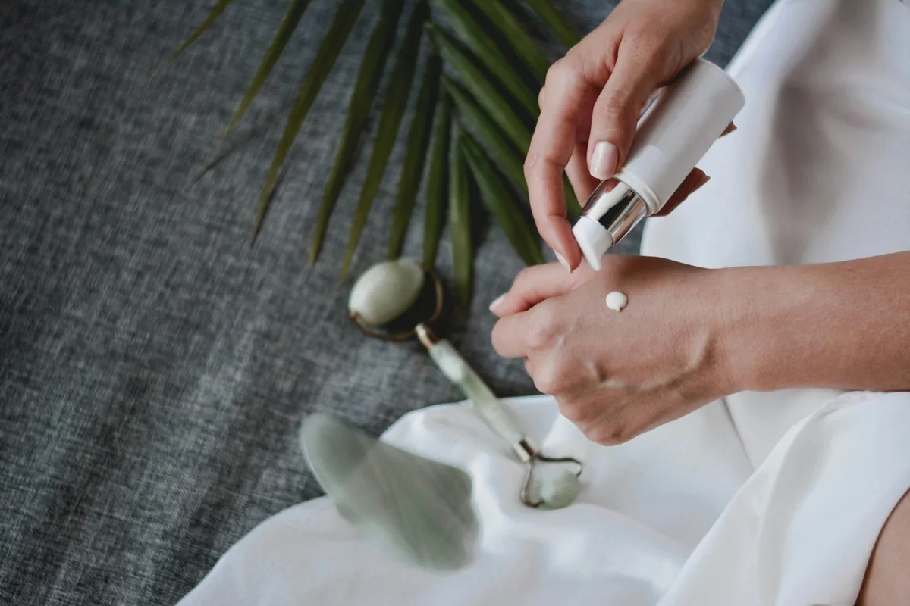

Feszesség és rugalmasság
Bőrfiatalító kezelések a változó kontúrok és a ráncok ápolására.
Neked is jár a törődés
A bőröd egyedi, ezért a kezeléseidnek is annak kell lennie. Bőrfiatalítás, hidratálás és aknékezelés, személyes figyelemmel.
Időpontot kérek
A bőröd igényeiből indulunk
Az első találkozáskor felmérem a bőröd állapotát. A kezelési tervet ahhoz igazítom, amire most szükséged van.

Bőrfiatalító kezelések a változó kontúrok és a ráncok ápolására.
Célzott tisztítás és személyre szabott otthoni rutin kialakítása.
Törődés a fakó, vízhiányos és egyenetlen bőrnek.
Kíméletes, a bőröd aktuális állapotához igazodó hatóanyagok.
Személyre szabott megoldások

Belico arckezelések
A Belico kezelések során növényi összetevőket és a bőröd állapotához illő hatóanyagokat használok. Az első találkozáskor közösen választjuk ki a számodra megfelelő kezelést.

Mesotica luxus kezelések
Célzott bőrfiatalító ápolás kozmetikai peptidekkel, személyre szabott kezelési terv részeként.

További lehetőségek
A megfelelő eljárás kiválasztásában személyesen segítek.
A bőröd hálás lesz érte
Mély hidratálás, üdébb bőr és természetes hatás.
Ápoltabb, ellenállóbb bőr és magabiztosabb közérzet.
Komplex megoldások
Átgondolt kezeléssorozatok és személyes figyelem, az első alkalomtól az otthoni rutinodig.
79 000 Ft
Feszesebb, simább, üdébb bőr, célzott bőrfiatalító kezelésekkel.
99 000 Ft
Intenzív bőrmegújítás és személyre szabott bőrápolási tanácsadás.
59 000 Ft
Öt alkalmas intenzív bőrtisztító program, 14–19 éveseknek.
Ha egy 5 alkalmas kezelés után nem vagy elégedett, visszatérítem a díj 50%-át.
„Korábbi rossz tapasztalatok miatt sokáig nem mertem kozmetikushoz járni, de ez az itt töltött első alkalmat követően megváltozott. A bőröm minden kezelés után szinte ragyog, remekül érzem magam, és Eliza segítségével sikerült kialakítanom a helyes, bőrtípusomnak megfelelő arcápolási rutint. Szívből ajánlom!”
„Eliza nagyon kedves, csupaszív kozmetikus, a kozmetika csodaszép, tiszta, hangulatos, mindig örömmel járok ide vissza. Legutóbb a 10 alkalmas arcfiatalító kezelést vettem igénybe, és az eredmény magáért beszél, azóta több pozitív visszajelzést is kaptam ismerőseimtől. Csak ajánlani tudom Elizát!”
Az első lépéstől együtt
Megbeszéljük, miben segíthetek, és időpontot választunk.
Felmérjük a bőröd állapotát, és összeállítjuk a kezelési tervedet.
A kezelés mellé otthoni bőrápolási tanácsokat is kapsz.